Aromatherapy is a soothing healing treatment that obtain nautral
plant extracts to promote health and well-being. It's also called oil therapy. This product will help enhance both physical and emotional health. The health of the body, mind, and spirit. Try This Product From Amazon
Essential Oils
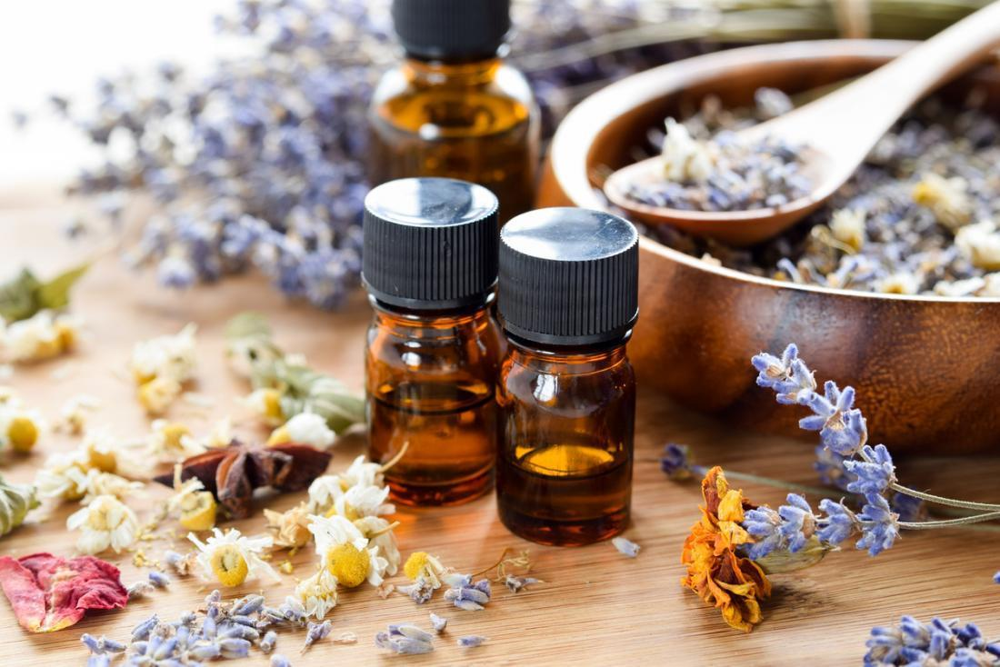
Essential Oils is a must have whether you have the aromtherpay or not (by smelling it). The types of ingredient in different scents differ to your mood. Example: feeling stressed out, try the lanvender to keep you calm. Click Here To See
Candles
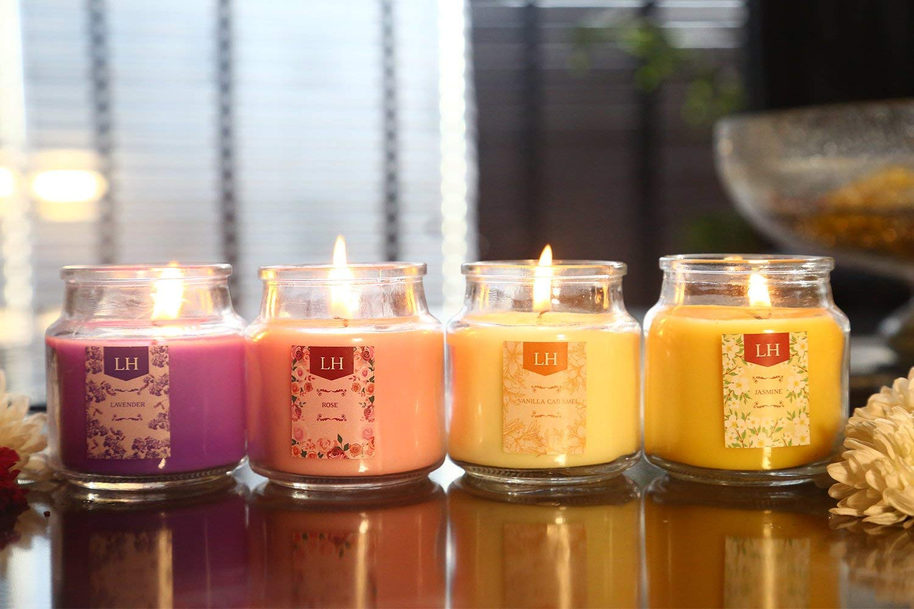
If you don't want try the aromatherapy, that's fine. Scented candles is another alternative. Candles will also keeps you in a soothing mood. Just like aromatherapy, you can match the scent that keeps you calm or forcus according to your mood. Bath and Body Works Are Known For There Quailty Candles
Face Masks
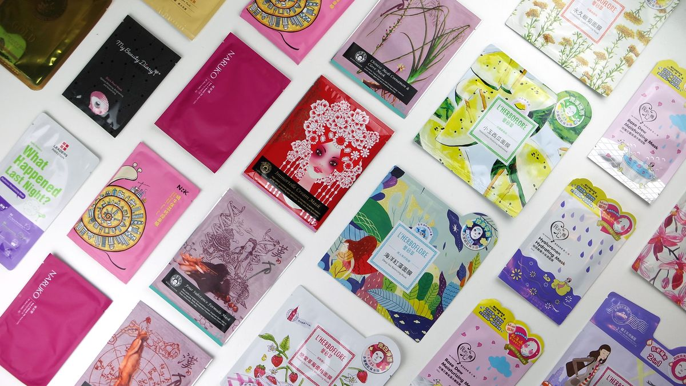
Face Masks is good for keeping your face moisturized, clean and smooth.
Coconut Oil
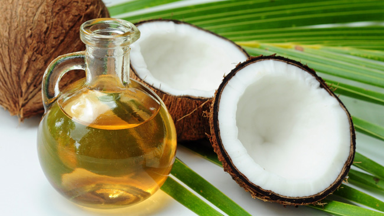
Coconut Oil is known for its benefits towards the skin such as reducing inflammation, healing wounds, moisturize the skin and so much more. Find Out More About Coconut Oil Here
A Journal
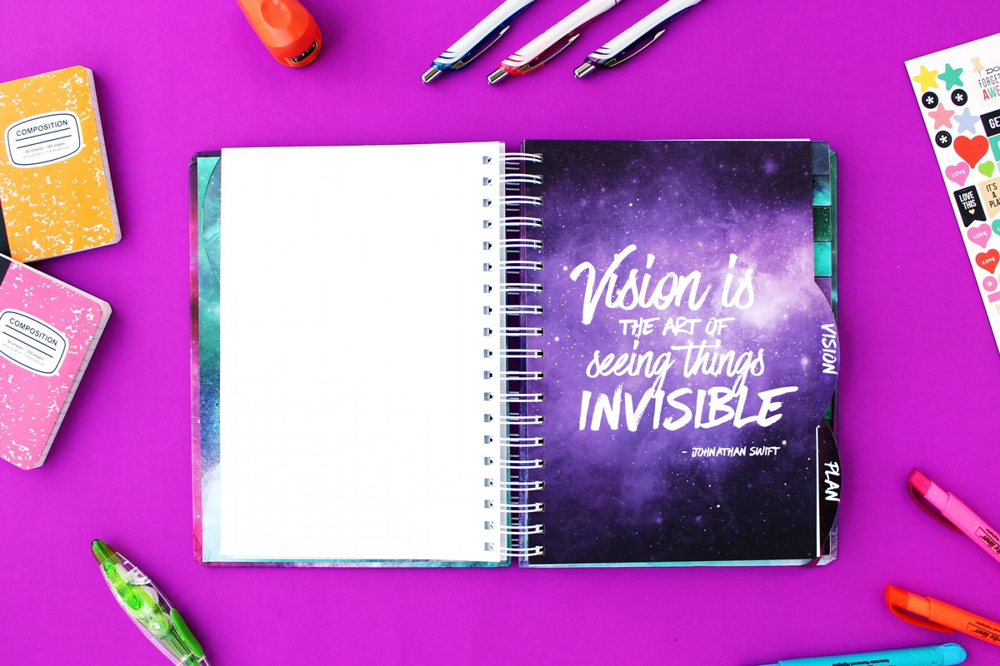
Having a bad mood or you simply want to track your mood, having a journal near helps you express emotions non-agresstive towards people in your surroundings.
Ear Buds/Headphones
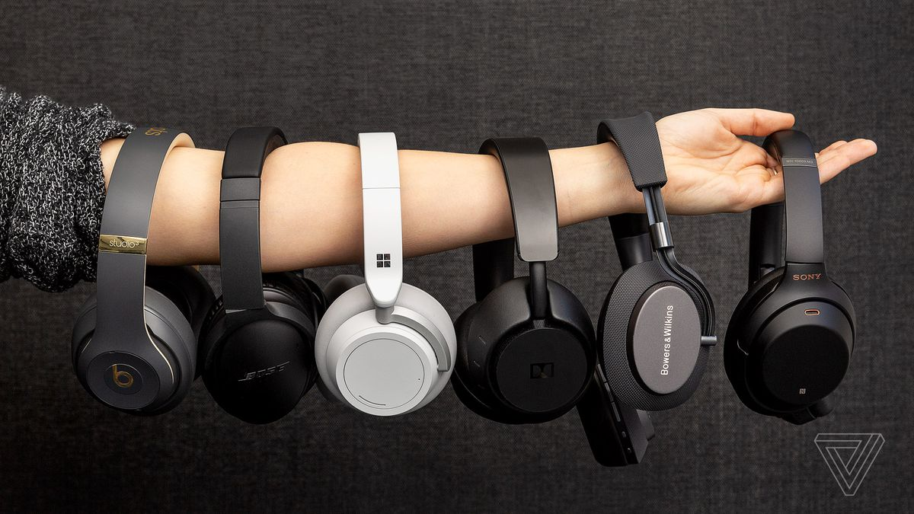
I know, majority of the population obtain ear buds/headphones. But this is a simple reminder that ear buds/headphones can block you off from the world for you time.
Tea
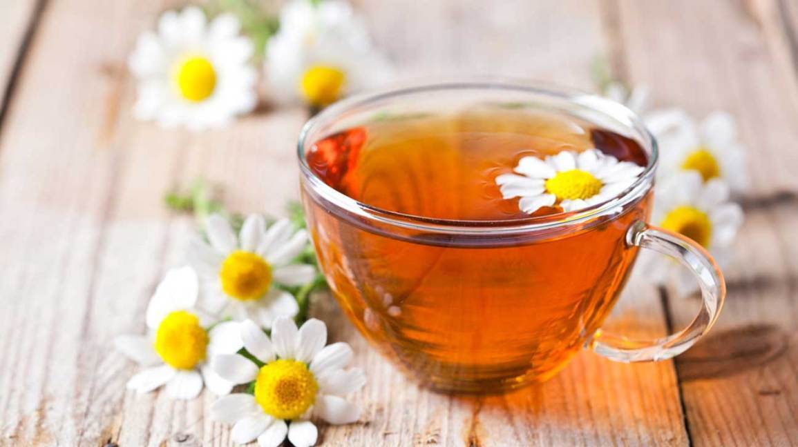
Having a hot cup of tea really do wonders, of course non sugary ones at least. Some may taste nasty but you can also add honey, fruits or other healthy ingredients to give pleasure to your taste buds. Try searching for chinese/japanese tea. That's there trick for youthful skin and a healthy life.
Fuzzy Socks
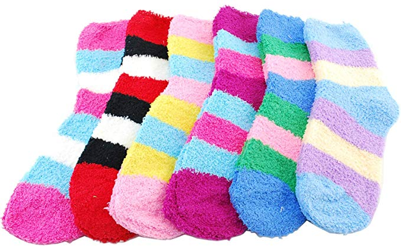
Who doesn't like fuzzy socks? It keeps your feet cozy and making you feel fresh. It's hugs for your feet.
Lotion
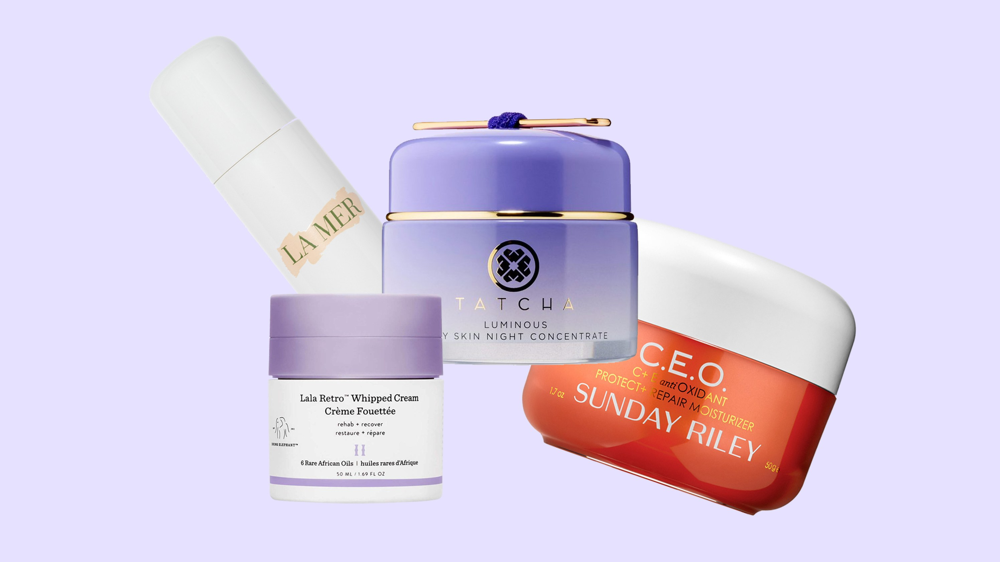
Yes, lotion. Even the smallest things that we do keep us refreshed, clean and smooth. Just make sure you find the right lotion for your skin type.
Bubbles
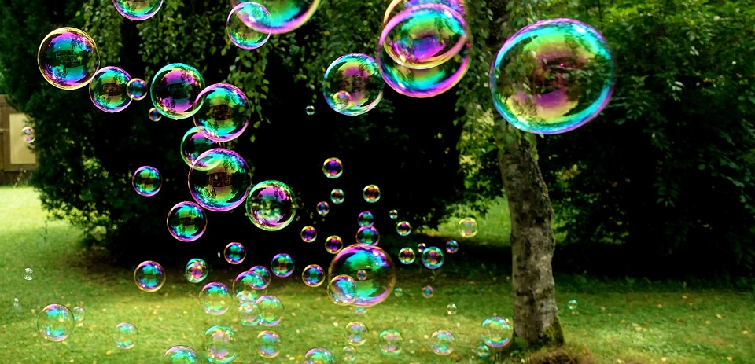
Bubbles? Yes bubbles. Bubbles is not only for children. You don't have to blow bubbles in public, but you can do it indoors. Seeing and blowing is like a stress reliever. Watching the bubbles draft away one by one can make you wonder and reflect about life, of what we can take for granted.
Chapstick
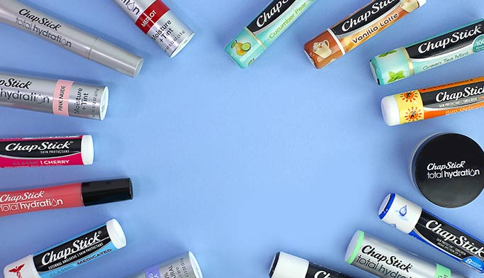
Having chapsticks at all times is a life saver. It makes you take with confidence whether your on a date, job interview or feeling refreshed.
Puzzle
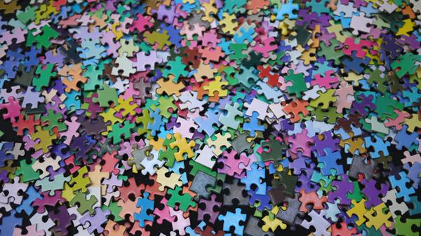
Doing puzzles can easily distract you and stay focused when you need it.
Heating/Cold Pads
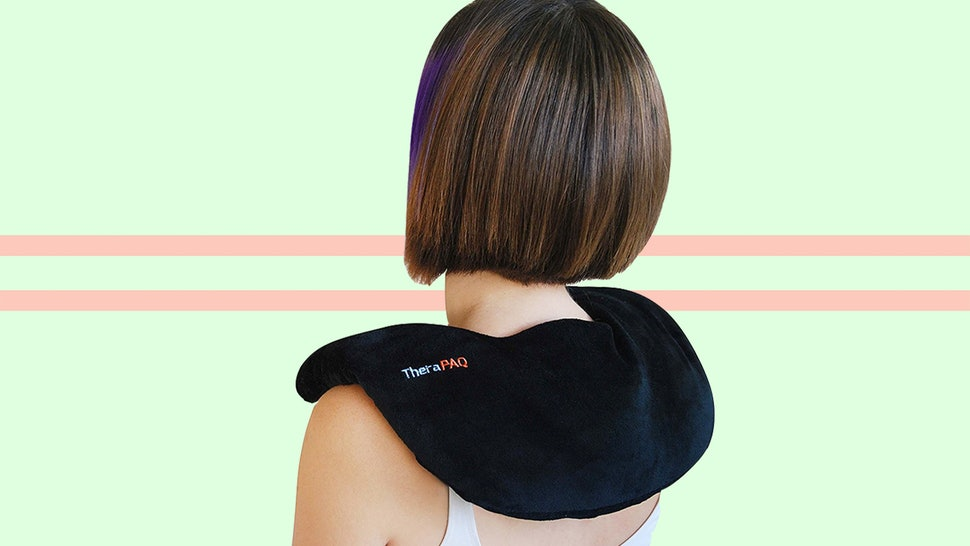
Heating/Cold Pads are beautiful relaxing ways to get rid of tense in the body either from stress, anxiety or muscle pain.
Satin/Silk Pillowcases
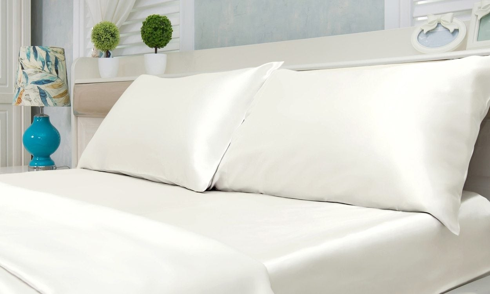
Satin or silk pillowcases gives you a beauty sleep like you never had before. Also, it's beneficial for the hair by not tangling your hair.
Slippers
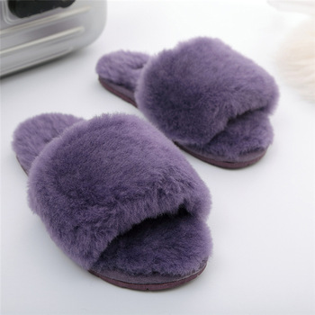
Just like fuzzy socks, fuzzy slippers can give your feet a nice massage while walking or seating.
Water
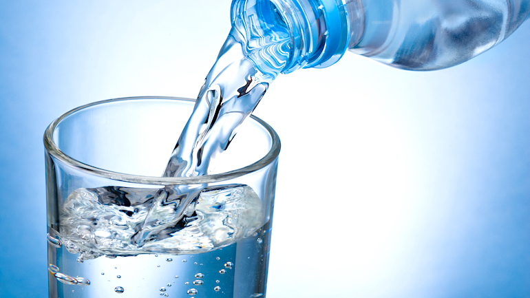
Many people are tried of hearing this but water is beneficial to the body, skin, hair and nails. Keeping yourself well hydrated will boost your metabolism, looking youthful and feeling more confident.
A Interesting Book To Read
Having a book that is interesting to you will keep you distracted from any thoughts that harm you. Plus, reading a few hours before bed can help you fall a sleep easily. I prefer a physical copy of a book.
Coloring Books and Art Suplies
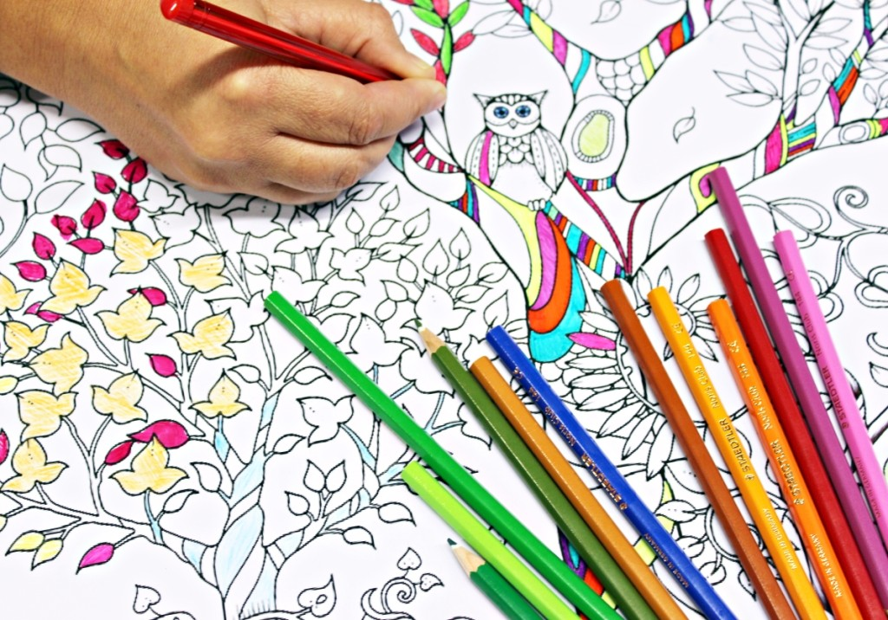
Coloring or drawing helps you release any issues that you may have. Draw anything you want and color how the way you want to color. EXPRESS YOURSELF!!!
Collagen For Skin
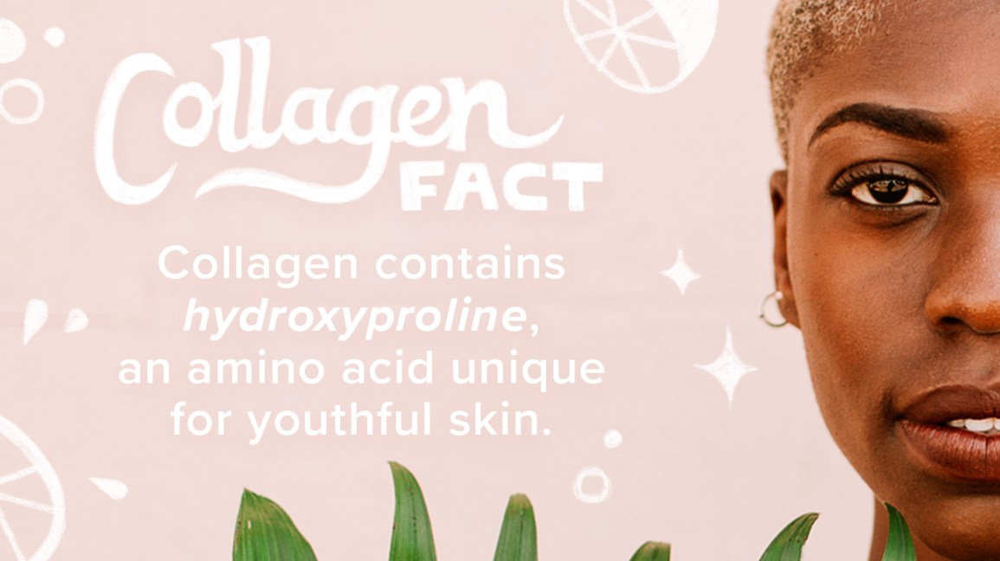
Collagen is known it's benefits of promoting glowing, vibrant skin. It provides protein elasticity to the skin, appearing as a more youthful and healthy. Everyone has collagen, but this product produce more collagen in the body to be healthy. Neocell Is The Most Trusted Brand
Vitamin Supplements
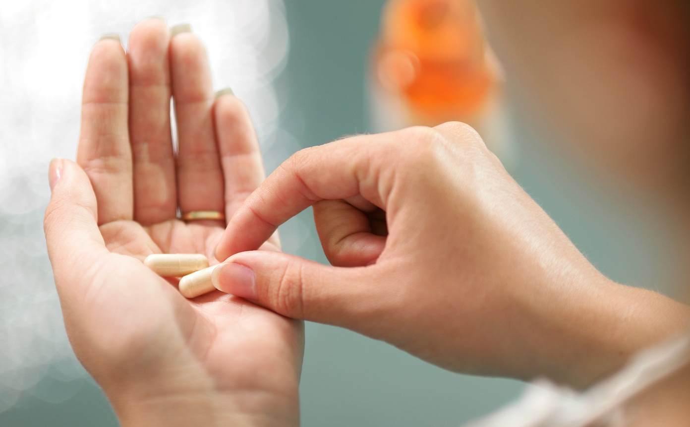
If you're someone that doesn't eat a lot of hearty foods, than this message goes out to you. It's important to consume all types of vitamins to keep yourself healthy. Multivitamins is heavyly suggested by doctors and other people.